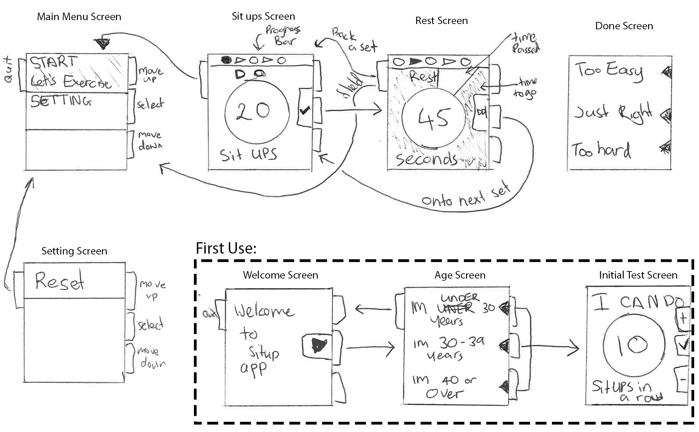

| Name | Student ID | Strength | Weekness |
|---|---|---|---|
| Mike Tamis | 4592017 | experience with HTML, Javascript, CSS; experience working QA | Not very organized; Not very good at English |
The idea is simple, a smart watch app that tracks how many sit ups you do daily and motivates you towards completing your set goal.
Each day when you go to use the application it presents you with todays workout. This consist of about 4 sets of pushups. once started it takes you through each set stating the number of situps you have to do for each set. in between each set it has a cool-down timer before the next set.
After completing all of the sets it asks how you found these sets so it can give you an appropriate number of reps next time. This is done by selected one of three options "It was too easy.", "It was just right." and "It was too hard."
Then the user is presented with a progress screen where they can see how close they are to achieve their goal.
Very basic, you can get three different trophy badge that you can post to your facebook wall.
you start out at level 1 (or what ever level it puts you at based on your initial push up count): at the end of level 1 you are should be able todo 100 straight push. Level 2: at the end you can do 150 straight pushups. Level 3: etc....
each level is broken down in too 3 sub levels. each sub level has a preset workout for you todo each day.
very similar to App 1: Sit Ups. it alternates between telling you how many sit ups todo and a cool down. It has a cool feature that while you are doing the sit ups you can tap the screen to cause the number to go down instead of counting the reps yourself.
at the end of the work out it asks you the same three questions as App 1: "It was too easy.", "It was just right." and "It was too hard." too easy cause you to go up a sublevel, just right keeps you on your current sublevel, too hard drops you down a sublevel.
Has the ability to sync with Google Fit. Although all it sync is calories burnt, doesnt sync reps etc
has ability to see the number of reps completed and Calories burn on a graph.
lets you backup the data to sdcard and dropbox
Levels System: level 1: 20 push ups in a row level 2: 60 push ups in a row level 3: 100 push ups in a row
each level is broken down in to 9 days where on the 9th day you only do one set where that one set is the levels goal. e.g. 20 push ups in a row.
Same as the others, except for it use the accelerometer in your phone to automatically count down and on the last set of the workout it lets you push yourself to see how many more sit ups you can do
has badges that you can earn for doing various different things i.e. total number of sit ups. Each badge has multiple levels i.e. do 1,000 push ups since you started then 2,000.
it has also has a leader board where it shows you agianst the rest of the world and your friends
Nice statistics, total situps, average situps per day, calories burnt, etc. Has pretty graphs.
Uploads all the data to your runtastic account
To keep things simple I'm going to have the emulator function very similar to Pebble Time. This has several advantages, one its functionality are very simple and two I have one so it will help with visualizing real world application.
I'm going to use the workout schedule found on twohundredsitups.com
The following sketch show the rough app flow:
When you open the app for the very first time you are present with the "Welcome" screen. Once the user hits the middle button they are taken to the "age" selection menu.
The "age" selection screen gives you three options which correspond to the ages in twohundredsitups.com initial test. Clicking top button sets the age to "under 30", clicking middle button sets the age to "30 to 39" and clicking bottom button set the age to "40 plus". It then take you to the "initial amount" test.
The "initial amount" amount screen wants you todo as many push up as you can, and then enter it, top button increase the amount, bottom decrease the amount. Middle button sets the amount and takes you to the main "menu".
The main menu is where you can find everything, for a starter all we need is settings and start. When you select start it will take you to the sit up screen. to get back to the main menu from anywhere you can hold down the Back Button
The "sit ups" screen will indicate how many sit ups you must perform, the progress bar at the top will show where you are at, dots indicate sit ups and arrows indicate rests. once the user has finished all their sit ups they hit the middle button to move on, which takes them to the "rest" screen.
The "rest" screen has how many seconds left you have to rest for. It will also have a pie chart in the background to give some visual feedback. If the user decides they don't want to rest the can skip the rest by clicking the middle button.
Once you have completed all of your sets, you will be presented with the "done" screen, where you get three options, if you select "Too easy" you go up an exercise, if you select "Just right" you stay on the current exersize, if you chose "Too hard" you go down an exersize